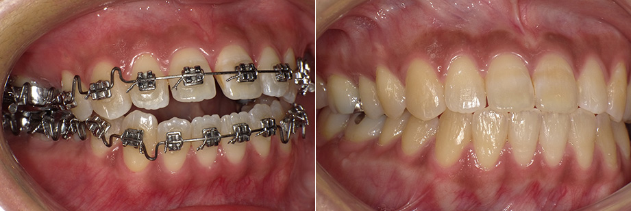

- ホーム
- 矯正治療・咬み合わせ治療
吉川歯科医院の矯正治療・咬み合わせ治療
大阪四ツ橋駅から徒歩2分の吉川歯科医院では、矯正治療や咬み合わせ治療をおこなっております。このページでは、当院が矯正治療で取り扱っているメニューや矯正治療の進め方、咬み合わせ治療について紹介しております。
矯正歯科～機能性と審美性を追求します～
乱れた歯並びは、コンプレックスの原因になるだけでなく咬み合わせが悪く、不衛生になりやすいため虫歯や歯周病など歯科疾患を招きやすくなるほか、身体にも大きな負担をかける原因になります。
これまでは、日本では八重歯をチャームポイントと捉える人もいましたが、最近では健康的できれいに整った美しい歯並びを重視する海外の考えも入ってくるようになり、積極的に美しい歯並びに矯正する人が増えてきました。
当院では、咀嚼に関する機能面、見た目の審美性の両方を考慮した矯正歯科治療をおこなっております。お口全体の歯並び治療だけでなく、前歯だけの部分矯正治療にも対応しております。お気軽に歯並びに関するお悩みをお聞かせください。
当院で取り扱う矯正装置
※表は左右にスクロールして確認することができます。
 |
ゴムメタルワイヤーゴムメタルワイヤーは、患者様に合わせたハンドメイドのゴムメタルワイヤーの矯正装置です。チタン合金でできています。従来2〜3年かかっていた矯正治療を、約1年と大幅に短縮できます。 歯科医師がいろいろ曲げて、ワイヤーを変形できるので、矯正歯科治療においては、とても優秀なワイヤーといえます。 |
※表は左右にスクロールして確認することができます。
床矯正床矯正は、入れ歯のように顎に取り付ける矯正器具です。顎を少しずつ拡げていくことで、歯が正常に生えるためのスペースを確保します。 |
インプラント矯正お口の中にインプラントアンカーを入れて、それを固定源にします。インプラントを固定源にすると歯を動かせる力が強く、治癒期間の短縮につながります。 |
矯正治療の流れ
当院では、ご相談から検査、診断を細かく丁寧に進め、充分な準備を整えてから矯正治療を始めております。最適な治療方針を立てるためにも、まず患者様がお口に対してどのような悩み・コンプレックスを抱えていらっしゃるのか十分にカウンセリングでヒアリングすることを大切にしています。その後、精密検査をおこない具体的な治療方針を決定いたします。
- 【1】相談・カウンセリング
- 最初にどのようなことで悩んでいらっしゃるかお話を聞かせてください。簡単な診察とともにどのような矯正治療が必要かをご説明させていただきます。また、治療に関して気になることや心配なことがあればお気軽にお申し付けください。
- 【2】精密検査
- 矯正治療に前向きな患者様には、精密検査としてレントゲン撮影やお口・お顔の写真撮影、歯型採取をおこないます。できるだけ多くの情報を得て、診断と治療方針を決定いたします。
- 【3】診断
- 検査の結果をもとに診断をおこないます。また、お口のお悩みを解決するためにどのような治療が良いか治療方針をご提示し、患者様に検討していただきます。矯正治療は、費用だけでなく治療期間もかかるため患者様が納得されてから治療を開始いたします。
- 【4】治療の同意
- 矯正治療についてご同意いただいたら、治療費用の支払い方法などについて説明いたします。矯正治療にかかる費用は、患者様によってかなり差が出てきます。
- 【5】矯正装置の製作
- 治療で使用する矯正装置を作製いたします。矯正装置を装着する前には、口腔内を清潔に保っていただくためにブラッシング指導をおこないます。
- 【6】治療開始と通院
- 矯正装置を装着して、治療が開始されます。3週間〜4週間に1度のペースでご来院いただき、矯正装置を調整いたします。矯正治療中に発生しやすい虫歯や歯周病の予防処置も併せておこないます。
- 【7】終了
- 各治療によって矯正治療終了までの期間が異なります。
矯正治療の料金表
-
診断料 ¥60,000 矯正（上・下） ¥400,000（上下それぞれ） トゥースポジショナー ¥50,000 -
リテーナー（上・下） ¥20,000(上下それぞれ) 調整量（月1回分） ¥5,000
※表記価格は税別価格になります。
咬み合わせ治療～天然歯に近い咬み心地を実現します～
咬み合わせが悪いと、スムースで左右均一な咀嚼運動がおこなえないため、一部の歯に過度な咬合力がかかり過重負担が生じます。長期間にわたって負担がかかり続けば、歯の寿命は縮み、歯が欠け口腔内環境のバランスも外見も大きく崩れていきます。すると、肩こりや耳鳴り・目の痛み、片頭痛など不定愁訴と呼ばれる身体の不調が生じるようになります。
当院の咬み合わせ治療では、歯並びの治療のほかに咬み合わせを整えることを目的とした治療を行っています。まず、患者様お一人おひとりの体の状態や咬み合わせの状態、お悩みの症状を把握してから治療をおこなっております。
なお、咬み合わせの治療方法は、矯正治療のほかに補綴治療（被せ物や差し歯）もおこなっております。患者様にとってご無理のないよう進めてまいります。治療でわからないことがありましたら遠慮なくご相談ください。
ガンマシステムの顎機能診断システム
吉川歯科医院の咬み合わせ治療では、患者様のお口に完全にマッチした咬み合わせを実現するために、ガンマシステムを導入しております。ガンマシステムでは三次元で患者様の骨格形態を診査して、コンピュータ解析をおこなうことができ、お一人おひとりの骨格に合った歯科技工物を作製できる診療システムです。
矯正歯科治療においては無くてはならない機械です。
※表は左右にスクロールして確認することができます。
CADIAX(キャディアックス)患者様のお顔に専用の機械を装着して、下顎の動きをリアルタイムで正確に把握する測定器です。口を開ける動き・咀嚼中の動きなどを測定し、その解析結果に基づいて、治療計画立案に使用する咬合器の設定をおこなったり、最終補綴物を製作します。 |
CADIAS(キャディアス)頭部のレントゲン写真をもとに顎の位置関係や顔面骨格全体を正確に分析できます。当院ではキャディアスで得た情報をもとに患者様にとって最適な治療方針を立案しております。 |
※表は左右にスクロールして確認することができます。
CADIWAX(キャディワックス)CADIAX（キャディアックス）とCADIAS（キャディアス）から得た下顎運動のデータに基づいて、リファレンスSL咬合器に装着することで精度の高い歯科技工物を製作いたします。 |
リファレンスSL咬合器リファレンスSL咬合器とは、キャディアックスから得た計測データを反映して咬み合わせや咀嚼運動を再現する咬合器です。患者様一人ひとりの顎の状態に合わせてさまざまな顎の運動を再現できます。 |
補綴治療・スプリント治療・咬合誘導・部分矯正
当院では、矯正治療や咬み合わせ治療のほかに、次の治療もおこなっております。
-
補綴治療
- 歯が折れた・欠けたなどの理由で咬み合わせに問題が生じている場合は、入れ歯やブリッジ・インプランなど補綴治療をおこない、高さや形状を整えます。
-
スプリント療法
- マウスピース型装置の「スプリント」を使用して、歯を少しずつ動かして咬み合わせを改善していきます。スプリントは、就寝中に発生しやすい歯ぎしりや食いしばりの予防にも使われます。
-
咬合誘導
- 小さなお子様の咬み合わせを改善するために、顎や骨格が成長する力を利用して歯を正しく並べるためのスペースを確保します。成長に合わせてスペースを確保できるため、お子様にとって負担の少ない治療法です。
-
部分矯正(MTM)
- 歯並び全体ではなく、前歯の数本など部分的に矯正をおこなう治療です。お口全体の矯正治療と比べて、短期間で治療を終えることができます。